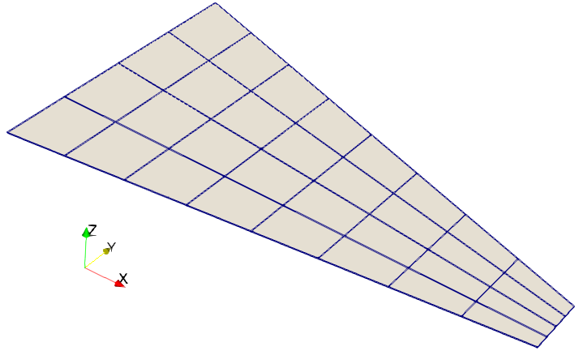
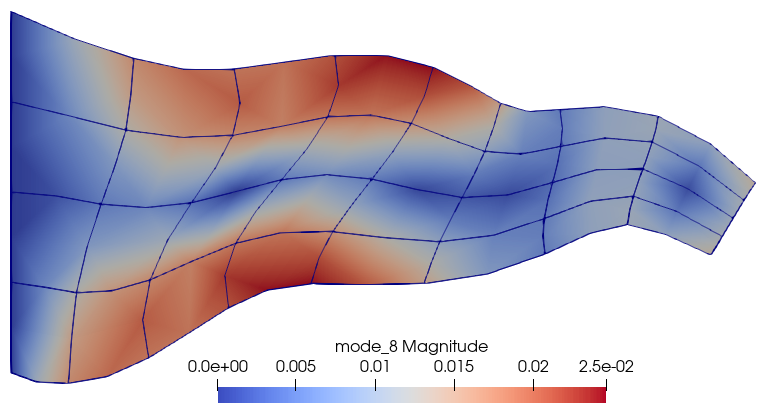

TEST FV32: Cantilevered tapered membrane, free vibration
Description
FV32: Cantilevered tapered membrane is a test recommended by the National Agency for Finite Element Methods and Standards (U.K.): Test FV32 from NAFEMS publication TNSB, Rev. 3, “The Standard NAFEMS Benchmarks,” October 1990.
Reference solution: 44.623 130.03 162.70 246.05 379.90 391.44 for the first six modes.
The benchmark is originally for plane stress conditions. We simulate the plane-stress conditions with a three-dimensional mesh that is constrained along one plane of nodes to effect the constrained motion only in the plane of the trapezoidal membrane.

References
[1] Test FV32 from NAFEMS publication TNSB, Rev. 3, “The Standard NAFEMS Benchmarks,” October 1990.
Goals
- Show how to generate hexahedral mesh in a rectangular block and shape it into a trapezoid.
- Set up model data for the solution algorithms.
- Use two different finite element model machines to evaluate the stiffness and the mass.
- Execute the modal algorithm and export the results with another algorithm.
#Definitions
Bring in the required support from the basic linear algebra, eigenvalue solvers, and the finite element tools.
using LinearAlgebra
using Arpack
using FinEtools
using FinEtools
using FinEtoolsDeforLinear
using FinEtoolsDeforLinear: AlgoDeforLinearModuleThe input data is given by the benchmark.
E = 200*phun("GPA");
nu = 0.3;
rho= 8000*phun("KG/M^3");
L = 10*phun("M");
W0 = 5*phun("M");
WL = 1*phun("M");
H = 0.05*phun("M");We shall generate a three-dimensional mesh. It should have 1 element through the thickness, and 8 and 4 elements in the plane of the membrane.
nL, nW, nH = 8, 4, 1;# How many element edges per side?The reference frequencies are obtained from [1].
Reffs = [44.623 130.03 162.70 246.05 379.90 391.44]The three-dimensional mesh of 20 node serendipity hexahedral should correspond to the plane-stress quadratic serendipity quadrilateral (CPS8R) used in the Abaqus benchmark. We simulate the plane-stress conditions with a three-dimensional mesh that is constrained along one plane of nodes to effect the constrained motion only in the plane of the trapezoidal membrane. No bending out of plane! First we generate mesh of a rectangular block.
fens,fes = H20block(1.0, 2.0, 1.0, nL, nW, nH)Now distort the rectangular block into the tapered plate.
for i in 1:count(fens)
xi, eta, theta = fens.xyz[i,:];
eta = eta - 1.0
fens.xyz[i,:] = [xi*L eta*(1.0 - 0.8*xi)*W0/2 theta*H/2];
endWe can visualize the mesh with Paraview (for instance).
File = "FV32-mesh.vtk"
vtkexportmesh(File, fens, fes)
@async run(`"paraview.exe" $File`)The simulation will be executed with the help of algorithms defined in the package FinEtoolsDeforLinear. The algorithms accept a dictionary of model data. The model data dictionary will be built up as follows.
First we make the interior region. The model reduction is for a three-dimensional finite element model.
MR = DeforModelRed3D
material = MatDeforElastIso(MR, rho, E, nu, 0.0)We shall create two separate finite element model machines. They are distinguished by the quadrature rule. The mass rule, in order to evaluate the mass matrix accurately, needs to be of higher order than the one we prefer to use for the stiffness.
region1 = FDataDict("femm"=>FEMMDeforLinear(MR, IntegDomain(fes, GaussRule(3,2)), material), "femm_mass"=>FEMMDeforLinear(MR, IntegDomain(fes, GaussRule(3,3)), material))Select nodes that will be clamped.
nl1 = selectnode(fens; plane=[1.0 0.0 0.0 0.0], thickness=H/1.0e4)
ebc1 = FDataDict("node_list"=>nl1, "component"=>1, "displacement"=>0.0)
ebc2 = FDataDict("node_list"=>nl1, "component"=>2, "displacement"=>0.0)
ebc3 = FDataDict("node_list"=>nl1, "component"=>3, "displacement"=>0.0)Export a VTK file to visualize the selected points. Choose the representation "Points", and select color and size approximately 4. These notes should correspond to the clamped base of the membrane.
File = "FV32-nl1.vtk"
vtkexportmesh(File, fens, FESetP1(reshape(nl1, length(nl1), 1)))Select all nodes on the plane Z = 0. This will be prevented from moving in the Z direction.
nl4 = selectnode(fens; plane=[0.0 0.0 1.0 0.0], thickness=H/1.0e4)
ebc4 = FDataDict("node_list"=>nl4, "component"=>3, "displacement"=>0.0)Export a VTK file to visualize the selected points. Choose the representation "Points", and select color and size approximately 4. These points all should be on the bottom face of the three-dimensional domain.
File = "FV32-nl4.vtk"
vtkexportmesh(File, fens, FESetP1(reshape(nl4, length(nl4), 1)))Make model data: the nodes, the regions, the boundary conditions, and the number of eigenvalues are set. Note that the number of eigenvalues needs to be set to 6+N, where 6 is the number of rigid body modes, and N is the number of deformation frequencies we are interested in.
neigvs = 10 # how many eigenvalues
modeldata = FDataDict("fens"=> fens, "regions"=> [region1], "essential_bcs"=>[ebc1 ebc2 ebc3 ebc4], "neigvs"=>neigvs)Solve using an algorithm: the modal solver. The solver will supplement the model data with the geometry and displacement fields, and the solution (eigenvalues, eigenvectors), and the data upon return can be extracted from the dictionary.
modeldata = AlgoDeforLinearModule.modal(modeldata)Here we extract the angular velocities corresponding to the natural frequencies.
fs = modeldata["omega"]/(2*pi)
println("Eigenvalues: $fs [Hz]")
println("Percentage frequency errors: $((vec(fs[1:6]) - vec(Reffs))./vec(Reffs)*100)")The problem was solved for instance with Abaqus, using plane stress eight node elements. The results were:
| Element | Frequencies (relative errors) |
|---|---|
| CPS8R | 44.629 (0.02) 130.11 (0.06) 162.70 (0.00) 246.42 (0.15) 381.32 (0.37) 391.51 (0.02) |
Compared these numbers with those computed by our three-dimensional model.
The mode shapes may be visualized with paraview. Here is for instance mode 8: 
The algorithm to export the mode shapes expects some input. We shall specify the filename and the numbers of modes to export.
modeldata["postprocessing"] = FDataDict("file"=>"FV32-modes", "mode"=>1:neigvs)
modeldata = AlgoDeforLinearModule.exportmode(modeldata)The algorithm attaches a little bit to the name of the exported file. If paraview.exe is installed, the command below should bring up the postprocessing file.
@async run(`"paraview.exe" $(modeldata["postprocessing"]["file"]*"1.vtk")`)To animate the mode shape in Paraview do the following:
- Apply the filter "Warp by vector".
- Turn on the "Animation view".
- Add the mode shape data set ("WarpByVector1") by clicking the "+".
- Double-click the line with the data set. The "Animation Keyframes" dialog will come up. Double-click "Ramp" interpolation, and change it to "Sinusoid". Set the frequency to 1.0. Change the "Value" from 0 to 100.
- In the animation view, set the mode to "Real-time", and the duration to 4.0 seconds.
- Click on the "Play" button. If you wish, click on the "Loop" button.
trueThis page was generated using Literate.jl.